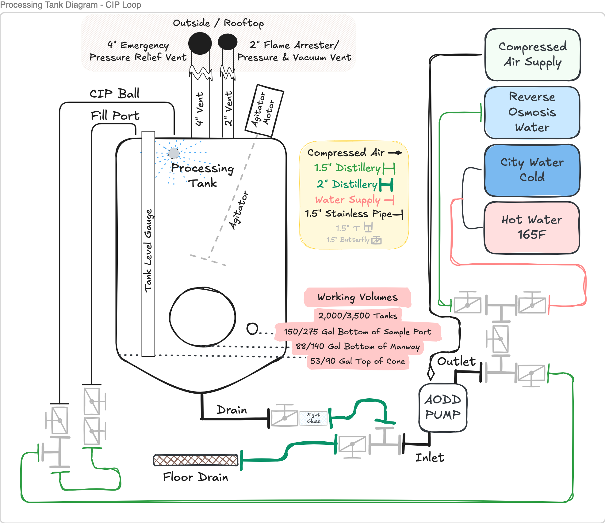

Processing Tank CIP
Purpose: Establish a standardized, tiered process for cleaning 2,000-gallon and 3,500-gallon stainless steel processing tanks using Sodium Percarbonate and Citric Acid. This ensures product purity, prevents cross-contamination, and extends equipment lifespan without over-using chemicals when a simple hot water flush will suffice.
Scope: Applies to all Simple Matters Spirits employees responsible for operating or cleaning the stainless steel processing tanks (PT01 through PT04).
⚠️ Safety & PPE Requirements
Vapor/Flash Hazard: An empty tank that recently held spirit is full of highly flammable ethanol vapor. Do not open the manway until a cold water purge has been completed to knock down the vapor.
Implosion Risk: Rapid cooling of a sealed tank can create a vacuum, leading to catastrophic implosion. You must manually verify that the tank is well-ventilated (manway must be OPEN) before introducing cold water during the final cooldown.
Max Temperature: The Hot Water System delivers water at 165°F. Do not exceed 165°F to protect tank gaskets and seals.
Steam Hazard: During pre-heating, live steam pressure will vent from open side ports and sample valves. Avoid these areas until the tank is up to temperature, then close the valves to prevent chemical spray.
Confined Space / Agitator Hazard: Never enter a tank without following the Confined Space Entry Procedures. Do not break the plane of the manway with your head or torso during visual inspections.
Chemical Handling: Always add chemicals to water, never water to chemicals.
Required PPE
- Steel-toe, non-slip shoes
- Safety glasses or goggles
- Chemical-resistant gloves and apron
- Face mask/respirator when handling Sodium Percarbonate or Citric Acid powder
Cleanliness Acceptance Criteria
A tank is only considered "clean" and ready for a new batch when it meets all of the following:
- pH Neutrality: Final rinse water tests at pH 6.5–7.5 (matching incoming city water)
- Visual Inspection: No visible residue, film, or tartrate crystals on interior surfaces
- Odor: No off-odors or severe flavor carryover from the previous batch
CIP Decision Tree
| Tier | Method | When to Use |
|---|---|---|
| Tier 1 | Hot Water Flush | Routine turnover between batches |
| Tier 2 | Detergent Wash | Transitioning between product types; spirit held >6 months; visible residue after Tier 1 |
| Tier 3 | Acid Rinse | After tank maintenance (welding, plumbing, confined space entry); foreign material found; heavy mineral scale |
Equipment & Materials Inventory

Hoses & Pump Equipment
- AODD Pump (Pump-01 or Pump-02)
- 0.5" Clear Vinyl Hose — 10ft (Qty: 1)
- 1.5" Distillery Hose — 10ft
- 1.5" Distillery Hose — 20ft
- 2.0" Distillery Hose — 20ft
- Washdown Flex Hose (Hot/Cold Water connection)
- Washdown Spray Nozzle
Fittings & Hardware
- 1.5" Tri-Clamp (TC) Clamps
- 1.5" Butterfly Valves
- 1.5" Tri-Clamp Tees
- 1.5" Tri-Clamp Sample Valve (pump manifold)
- Tri-Clamp Gaskets
- Tri-Clamp Mesh Screen / Filter Gasket
- Tri-Clamp Sight Glass
Tools & Testing
- 3/4" Wrench
- Cordless Drill with 3/4" Socket Adapter
- Digital Scale
- Digital Probe Thermometer
- Infrared (IR) Thermometer
- pH Test Strips
- Plastic Beaker
- Glass Beaker (chemical measuring/testing)
- Sample Tube/Vial
- Flashlight (tank inspection)
- Long-handled Cleaning Brush
- Large Stainless Steel Bucket
Utilities & Chemicals
- Compressed Air System connection
- Hot Water System connection
- RO Water System connection
- Sodium Percarbonate — Detergent (alkaline cleaner)
- Citric Acid — Anhydrous (acid rinse)
- Chemical Dilution Calculator
Pre-Cleaning: Vapor Purge & Inspection
- Isolate Agitator: At the main VFD control panel, press STOP for the specific tank's agitator to ensure it cannot be accidentally activated.
- Closed-Tank Vapor Purge & Dilution: Do not open the manway yet. Run cold city water through the CIP spray ball to knock down ethanol vapor and dilute any remaining spirit. Continue until diluted to below 5% ABV.
- Drain & pH Check: Test the pH of the diluted liquid to ensure it meets municipal wastewater standards (pH 6.0–9.0). Route drain hose to a trench drain and open to empty the tank.
- Visual Inspection: Once drained and purged, open the bottom manway. Do not break the plane of the manway with your head or torso. Use a flashlight or phone camera to visually check interior walls and spray ball for residue.
- Remove and inspect manway gaskets, valves, and removable parts for buildup or damage.
- Verify all hoses, the external pump, and the CIP spray ball assembly are clean, connected securely, and in working order.
The supply pressure from the Hot City Water line is not sufficient to completely cover the inside surface of the tank with spray water. A fill-and-recirculate method is required to preheat the tank and perform any cleaning tier.

- Assemble CIP Loop:
- Connect the sight glass to the bottom tank drain. Attach a 2" distillery hose from the sight glass to a T-fitting at the AODD pump inlet.
- Route the other side of this T-fitting via a 2" hose directly to the trench floor drain.
- Connect a T-fitting to the pump outlet with butterfly valves on each side (utility inlet for RO/Hot/Cold water).
- Attach the 1.5" TC Sample Valve to the pump manifold to allow safe chemical sampling during the cycle.
- Route a 1.5" distillery hose from the pump outlet assembly to the upper tank manifold. Split with a T-fitting to supply both the CIP Ball and Fill Port arm.
- Attach the 0.5" clear vinyl hose to the sample port and route to a bucket or trench drain.
- Open Valves: Open all bottom drain valves, outlet valves, side ports, and sample ports to ensure airflow and clear pathways.
Keep your distance from the open side and sample ports as the tank heats up to avoid venting steam.
- Line Flush: Open the Hot City Water valve. Spray hot water through both the CIP Ball and Fill Port arms until water runs hot (~2 minutes). Close the Fill Port arm valve to direct all flow through the CIP ball.
- Preheat Tank: Dose Hot City Water directly into the tank until the water level reaches the Top of Cone. Shut off water supply.
- Recirculate to Temp: Turn on the AODD pump and recirculate for 5 minutes to heat the stainless steel.
- Verify Temperature & Secure Ports: Use the IR Thermometer to verify the tank has reached >140°F. Aim the laser at the non-reflective label sticker for an accurate surface temperature reading. Once hot, close side port and sample valves to prevent chemical spray.
- Drain: Dump the pre-rinse water to the trench drain.
- Dose Water: Fill the tank with Hot City Water until the water level reaches the Bottom of Manway.
- Add Chemical:
- Using the 3/4" socket and wrench, carefully remove the front manway.
- Weigh out Sodium Percarbonate. Standard dose is 25 grams per gallon (~0.66% by weight):
- 2,000 Gal Tank (88 Gal working volume): 2.2 kg (4.8 lbs)
- 3,500 Gal Tank (140 Gal working volume): 3.5 kg (7.7 lbs)
- Add chemical directly to the water through the open manway.
- Reinstall and tighten the manway.
- Wash Cycle (30–45 min): Start the AODD pump and recirculate the hot detergent mixture. Open the Fill Port arm valve for at least 10–15 minutes during this cycle to push detergent through that routing. Briefly open the sample port valve to flush the port, then close it.
- Safe Chemical Sampling: Never catch a midstream sample from the drain hose. Stop the AODD pump and draw carefully from the manifold sample valve into a glass beaker.
- Drain & Rinse: Dump detergent solution completely to the trench drain.
- Clear Lines: Turn on Hot City Water and rinse the tank, running fresh water through all CIP routes including the CIP ball, Fill Port, and a brief flush of the sample port.
- Verify Neutrality: Use pH test strips on the drain water. Continue rinsing until pH matches incoming city water (~pH 7), confirming all detergent is cleared.
- Ensure Rinsed: Complete a full Phase 2 clean and confirm all detergent is fully rinsed out.
- Dose Water & Acid: Fill with Hot City Water to the Bottom of Manway.
- Remove the manway and weigh out Citric Acid. Standard dose is 100 grams per gallon (~2.6% by weight):
- 2,000 Gal Tank (88 Gal working volume): 8.8 kg (19.4 lbs)
- 3,500 Gal Tank (140 Gal working volume): 14.0 kg (30.9 lbs)
- Add chemical directly through the manway and reseal.
- Remove the manway and weigh out Citric Acid. Standard dose is 100 grams per gallon (~2.6% by weight):
- Recirculate & Drain: Turn on the pump and recirculate through all pathways (including a brief sample port flush) for 15–20 minutes. Drain acid solution completely.
- Rinse: Rinse thoroughly with Hot City Water until drain water tests pH neutral. If passivating the steel, allow the tank to air dry completely for 24–48 hours before use.
Critical Implosion Risk: Do not shock the hot tank with cold water. Ensure the front manway is OPEN before beginning the cooldown process.
- Gradual Cooldown: Begin rinsing by blending Hot City Water and Cold City Water at the utility inlet. Gradually decrease the hot water to safely bring internal temperature down.
- Temperature Check: Monitor tank temperature using the sticker target on the tank exterior.
- Final RO Rinse: Once the tank surface temperature drops below 100°F, shut off city water and switch to the RO Water System. Circulate cold RO water for 10–15 minutes through all pathways to flush all remaining hard water residues. Drain completely.
Purpose: Remove mineral content to prevent spotting and scaling.
- Shut Off Utilities: Turn off compressed air supply to the AODD pump. Shut off all water supply valves.
- Relieve Pressure: Before unclamping any hoses, slightly crack open the highest butterfly valve in the loop (usually at the Fill Port or CIP arm manifold) to safely bleed off trapped liquid and air pressure.
- Disconnect: Disconnect hoses, drain remaining standing water into the large stainless steel bucket, replace the trench drain cover, and return all equipment to designated storage.
- Log Data: Record the CIP process in the maintenance logbook:
Troubleshooting & Common Issues
Residue or Foaming After Detergent Cycle
- Increase rinse cycles with hot city water
- Verify correct Sodium Percarbonate dosage and temperature
pH Not Neutral After Citric Acid Rinse
- Extend circulation time or decrease acid concentration slightly
- Ensure adequate rinsing with hot city water followed by cold RO water
Spray Ball Not Dispersing Evenly
- Check for clogs or obstructions in the spray ball assembly
- Increase pump flow rate via the Compressed Air System regulator if necessary